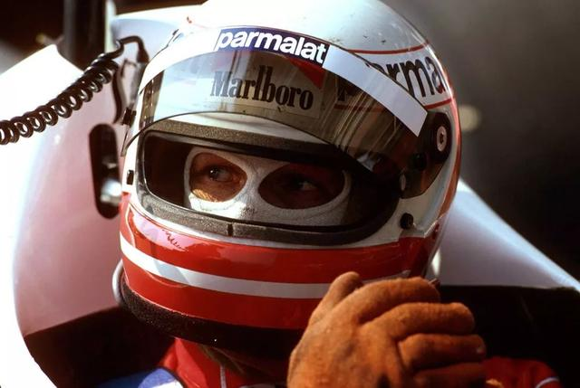
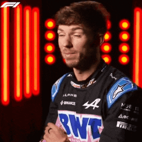
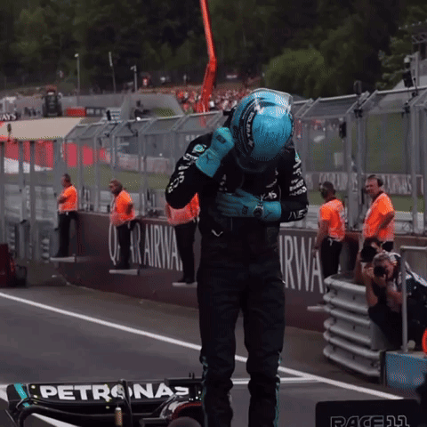

Les Légendes
Juan Manuel Fangio

Juan Manuel Fangio, surnommé « El Maestro », est l'un des pionniers de la Formule 1. Né le 24 juin 1911 à Balcarce en Argentine, il a remporté cinq titres de champion du monde entre 1951 et 1957 avec quatre écuries différentes (Alfa Romeo, Ferrari, Mercedes-Benz et Maserati). Fangio a marqué les débuts de la F1 avec son style de conduite précis et sa domination sur la piste.
Niki Lauda
Niki Lauda, né le 22 février 1949, est reconnu pour son incroyable détermination. Après un accident quasi-mortel au Nürburgring en 1976, il revient sur la piste seulement six semaines plus tard. Avec trois titres mondiaux (1975, 1977 avec Ferrari et 1984 avec McLaren), il est l'un des pilotes les plus respectés de l'histoire de la F1, notamment pour sa rigueur technique et son franc-parler.
Michael Schumacher

Michael Schumacher, né le 3 janvier 1969, est souvent considéré comme le plus grand pilote de tous les temps. Avec 7 titres mondiaux, 91 victoires et 68 pole positions, il a redéfini la Formule 1 au cours des années 1990 et 2000, en particulier avec Ferrari, qu'il a aidé à redevenir une force dominante.
Fernando Alonso

Fernando Alonso, né le 29 juillet 1981 à Oviedo, est devenu le premier champion du monde espagnol en 2005 avec Renault, un exploit qu'il a répété en 2006. Connu pour son agressivité sur la piste et sa capacité à tirer le meilleur de n'importe quelle voiture, Alonso reste compétitif même après deux décennies en F1.
Sebastian Vettel

Sebastian Vettel, né le 3 juillet 1987 à Heppenheim, est l'un des pilotes les plus accomplis de sa génération. Il a remporté quatre titres consécutifs avec Red Bull de 2010 à 2013. Connu pour sa constance et son sens tactique, il a également couru pour Ferrari et Aston Martin.
Lewis Hamilton

Lewis Hamilton, né le 7 janvier 1985 à Stevenage, est l'un des pilotes les plus titrés de l'histoire, avec 7 titres mondiaux, à égalité avec Schumacher. Il détient de nombreux records, dont celui du plus grand nombre de pole positions et de victoires sur différents circuits. Il est également un fervent défenseur des droits sociaux, utilisant sa plateforme pour sensibiliser aux inégalités.
Max Verstappen

Max Verstappen, né le 30 septembre 1997, est devenu le plus jeune vainqueur de Grand Prix à seulement 18 ans. Connu pour son style de conduite agressif et audacieux, il a remporté plusieurs titres consécutifs depuis 2021 avec Red Bull, devenant le visage d'une nouvelle ère de la F1.
Les Pilotes à Suivre en 2024
Charles Leclerc

Charles Leclerc, pilote monégasque né le 16 octobre 1997, est la star montante de Ferrari. Avec son talent naturel, il est souvent comparé aux plus grands pilotes de l'histoire. Sa saison 2019 l'a propulsé comme l'un des meilleurs de sa génération.
Lando Norris

Lando Norris, né le 13 novembre 1999, est un pilote britannique avec un style de conduite excitant et un sens de l'humour apprécié des fans. Il a aidé McLaren à redevenir compétitif et continue d'impressionner avec ses performances constantes.
Carlos Sainz

Carlos Sainz, fils du légendaire rallyman espagnol, a montré son talent chez McLaren avant de rejoindre Ferrari, où il a remporté son premier Grand Prix en 2022. Il est connu pour son approche méthodique et ses solides performances.
Pierre Gasly
Pierre Gasly, né le 7 février 1996, est l'un des pilotes les plus talentueux de sa génération. Sa victoire émotive à Monza en 2020 avec AlphaTauri a marqué l'histoire récente de la F1. Il est désormais chez Alpine pour relever de nouveaux défis.
George Russell
George Russell, né le 15 février 1998, est un pilote britannique avec une carrière prometteuse chez Mercedes. Sa première victoire en F1 en 2022 a confirmé son potentiel pour être un futur champion.
Alex Albon
Alex Albon, né le 23 mars 1996, est un pilote thaïlandais-britannique connu pour ses performances solides chez Williams après un passage difficile chez Red Bull. Il a prouvé qu'il méritait sa place en F1 avec plusieurs courses impressionnantes.